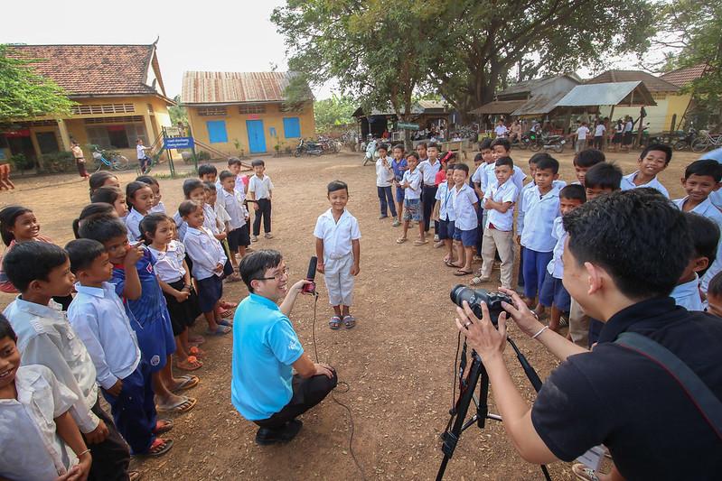

Social Media
What is social media?
Social media provides spaces for people and organizations to share and access news and information, communicate with beneficiaries, and advocate for change. Social media content includes text, photos, videos, infographics, or any other material placed on a blog, Facebook page, X (formerly known as Twitter) account, etc. for an audience to consume, interact with, and circulate. This content is curated by platforms and delivered to users according to what is most likely to attract their attention. There is an ever-expanding amount of content available on these platforms.
Theoretically, through social media everyone has a way to speak out and reach audiences across the world, which can be empowering and bring people together. At the same time, much of what is shared on social media can be misleading, hateful, and dangerous, which theoretically imposes a level of responsibility by the owners of platforms to moderate content.
How does social media work?
Social media platforms are owned by private companies, with business models usually based on advertising and monetization of users’ data. This affects the way that content appears to users, and influences data-sharing practices. Moderating content on these social media spaces brings its own challenges and complications because it requires balancing multiple fundamental freedoms. Understanding the content moderation practices and business models of the platforms is essential to reap the benefits while mitigating the risks of using social media.
Business ModelsMost social media platforms rely on advertising. Advertisers pay for engagement, such as clicks, likes, and shares. Therefore, sensational and attention-grabbing content is more valuable. This motivates platforms to use automated-recommendation technology that relies on algorithmic decision-making to prioritize content likely to grab attention. The main strategy of “user-targeted amplification” shows users content that is most likely to interest them based on detailed data that are collected about them. See more in the Risk section under Data Monetization by social media companies and tailored information streams.
The Emergence of Programmatic Advertising
The transition of advertising to digital systems has dramatically altered the advertising business. In an analog world, advertising placements were predicated on aggregate demographics, collected by publishers and measurement firms. These measurements were rough, capable at best of tracking subscribers and household-level engagement. Advertisers hoped their ads would be seen by enough of their target demographic (for example, men between 18 and 35 with income at a certain level) to be worth their while. Even more challenging was tracking the efficacy of the ads. Systems for measuring whether an ad resulted in a sale were limited largely to mail-in cards and special discount codes.
The emergence of digital systems changed all of that. Pioneered for the most part by Google and then supercharged by Facebook in the early 21st century, a new promise emerged: “Place ads through our platform, and we can put the right ad in front of the right person at the right time. Not only that, but we can report back to you (the advertiser) which users saw the ad, whether they clicked on it, and if that click led to a ‘conversion’ or a sale.”
But this promise has come with significant unintended consequences. The way that the platforms—and the massive ad tech industry that has rapidly emerged alongside them—deliver on this promise requires a level of data gathering, tracking, and individual surveillance unprecedented in human history. The tracking of individual behaviors, preferences, and habits powers the wildly profitable digital advertising industry, dominated by platforms that can control these data at scale.
Managing huge consumer data sets at the scale and speed required to deliver value to advertisers has come to mean a heavy dependence on algorithms to do the searching, sorting, tracking, placement, and delivery of ads. This development of sophisticated algorithms led to the emergence of programmatic advertising, which is the placement of ads in real time on websites with no human intervention. Programmatic advertising made up roughly two thirds of the $237 billion global ad market in 2019.
The digitization of the advertising market, particularly the dominance of programmatic advertising, has resulted in a highly uneven playing field. The technology companies possess a significant advantage: they built the new structures and set the terms of engagement. What began as a value-add in the new digital space—“We will give advertisers efficiency and publishers new audiences and revenue streams”—has evolved to disadvantage both groups.
One of the primary challenges is in how audience engagement is measured and tracked. The primary performance indicators in the digital world are views and clicks. As mentioned above, an incentive structure based on views and clicks (engagement) tends to favor sensational and eye-catching content. In the race for engagement, misleading or false content with dramatic headlines and incendiary claims consistently wins out over more balanced news and information. See also the section on digital advertising in the disinformation resource.
Advertising-motivated content
Platforms leverage tools like hashtags and search engine optimization (SEO) to rank and cluster content around certain topics. Unfortunately, automated content curation motivated by advertising does not tend to prioritize healthful, educational, or rigorous content. Instead, conspiracy theories, shocking or violent content, and “click-bait” (misleading phrases designed to entice viewing) tend to spread more widely. Many platforms have features of upvoting (“like” buttons) which, similar to hashtags and SEO, influence the algorithmic moderation and promote certain content to circulate more widely. These features together cause “virality,” one of the defining features of the social-media ecosystem: the tendency of an image, video, or piece of information to be circulated rapidly and widely.
In some cases, virality can spark political activism and raise awareness (like the #MeToo movement), but it can also amplify tragedies and spread inaccurate information (anti-vaccine information and other health rumors, etc.). Additionally, the business models of the platforms reward quantity over quality (number of “likes”, “followers”, and views), encouraging a growth logic that has led to the problem of information saturation or information overload, overwhelming users with seemingly infinite content. Indeed, design decisions like the “infinite scroll” intended to make our social media spaces ever larger and more entertaining have been associated with impulsive behaviors, increased distraction, attention-seeking behavior, lower self-esteem, etc.
Many digital advertising strategies raise risks regarding access to information, privacy, and discrimination, in part because of their pervasiveness and subtlety. Influencer marketing, for example, is the practice of sponsoring a social media influencer to promote or use a certain product by working it into their social-media content, while native advertising is the practice of embedding ads in or beside other non-paid content. Most consumers do not know what native advertising is and may not even know when they are being delivered ads.
It is not new for brands to strategically place their content. However, today there is much more advertising, and it is seamlessly integrated with other content. In addition, the design of platforms makes content from diverse sources—advertisers and news agencies, experts and amateurs—indistinguishable. Individuals’ right to information and basic guarantees of transparency are at stake if advertisements are placed on equal footing with desired content.
Content moderation is at the heart of the services that social-media platforms provide: the hosting and curation of the content uploaded by their users. Content moderation is not just the review of content, but every design decision made by the platforms, from the Terms of Service and their Community Guidelines, to the algorithms used to rank and order content, to the types of content allowed and encouraged through design features (“like”, “follow”, “block”, “restrict”, etc.).
Content moderation is particularly challenging because of the issues it raises around freedom of expression. While it is necessary to address massive quantities of harmful content that circulate widely, educational, historic, or journalistic content is often censored by algorithmic moderation systems. In 2016, for example, Facebook took down a post with a Pulitzer Prize-winning image of a naked 9-year-old girl fleeing a napalm bombing and suspended the account of the journalist who had posted it.
Though nations differ in their stances on freedom of speech, international human rights provide a framework for how to balance freedom of expression against other rights, and against protections for vulnerable groups. Still, content-moderation challenges increase as content itself evolves, for instance through increase of live streaming, ephemeral content, voice assistants, etc. Moderating internet memes is particularly challenging, for instance, because of their ambiguity and ever-changing nature; and yet meme culture is a central tool used by the far right to share ideology and glorify violence. Some information manipulation is also intentionally difficult to detect; for example, “dog whistling” (sending coded messages to subgroups of the population) and “gaslighting” (psychological manipulation to make people doubt their own knowledge or judgment).
Automated moderation
Content moderation is usually performed by a mix of humans and artificial intelligence , with the precise mix dependent on the platform and the category of content. The largest platforms like Facebook and YouTube use automated tools to filter content as it is uploaded. Facebook, for example, claims it is able to detect up to 80% of hate speech content in some languages as it is posted, before it reaches the level of human review. Though the working conditions for the human moderators have been heavily criticized, algorithms are not a perfect alternative. Their accuracy and transparency have been disputed, and experts have warned of some concerning biases stemming from algorithmic content moderation.
The complexity of content-moderation decisions does not lend itself easily to automation, and the porosity between legal and illegal or permissible and impermissible content leads to legitimate content being censored and harmful and illegal content (cyberbullying, defamation, etc.) passing through the filters.
The moderation of content posted to social media was increasingly important during the COVID-19 pandemic, when access to misleading and inaccurate information about the virus had the potential to result in severe illness or bodily harm. One characterization of Facebook described “a platform that is effectively at war with itself: the News Feed algorithm relentlessly promotes irresistible click-bait about Bill Gates, vaccines, and hydroxychloroquine; the trust and safety team then dutifully counters it with bolded, underlined doses of reality.”
Community moderation
Some social media platforms have come to rely on their users for content moderation. Reddit was one of the first social networks to popularize community-led moderation and allows subreddits to tack additional rules onto the company’s master content policy. These rules are then enforced by human moderators and, in some cases, automated bots. While the decentralization of moderation gives user communities more autonomy and decision-making power over their conversations, it also relies inherently on unpaid labor and exposes untrained volunteers to potentially problematic content.
Another approach to community-led moderation is X’s Community Notes, which is essentially a crowd-sourced fact-checking system. The feature allows users who are members of the program to add additional context to posts (formerly called tweets) that may contain false or misleading information, which other users then vote on if they find the context to be helpful.
Addressing harmful content
In some countries, local laws may address content moderation, but they relate mainly to child abuse images or illegal content that incites violence. Most platforms also have community standards or safety and security policies that state the kind of content allowed, and that sets the rules for harmful content. Enforcement of legal requirements and the platforms’ own standards relies primarily on content being flagged by social media users. The social-media platforms are only responsible for harmful content shared on their platforms once it has been reported to them.
Some platforms have established mechanisms that allow civil society organizations (CSOs) to contribute to the reporting process by becoming so-called “trusted flaggers.” Facebook’s Trusted Partner program, for example, provides partners with a dedicated escalation channel for reporting content that violates the company’s Community Standards.. However, even with programs like this in place, limited access to platforms to raise local challenges and trends remains an obstacle for CSOs, marginalized groups, and other communities, especially in the Global South.
The question of how to regulate and enforce the policies of social media platforms remains far from settled. As of this writing, there are several common approaches to social-media regulation.
Self-regulation
The standard model of social-media regulation has long been self-regulation, with platforms establishing and enforcing their own standards for safety and equity. Incentives for self-regulation, including avoiding the imposition of more restrictive government regulation and broadening a building consumer trust to broaden a platform’s user base (and ultimately boosting profits). On the other hand, there are obvious limits to self-regulation when these incentives are outweighed by perceived costs. Self-regulation can also be contingent on the ownership of a company, as demonstrated by the reversal of numerous policy decisions in the name of “free speech” by Elon Musk after his takeover of X (known as Twitter, at the time).
In 2020, the Facebook Oversight Board was established as an accountability mechanism for users to appeal decisions by Facebook to remove content that violates its policies against harmful and hateful posts. While the Oversight Board’s content decisions on individual cases are binding, its broader policy recommendations are not. For example, Meta was required to remove a video posted by Cambodian Prime Minister Hun Sen that threatened his opponents with physical violence, but it declined to comply with the Board’s recommendation to suspend the Prime Minister’s account entirely. Though the Oversight Board’s mandate and model is promising, there have been concerns about its capacity to respond to the volume of requests it receives in a timely manner.
Government Regulation
In recent years, individual governments and regional blocs have introduced legislation to hold social media companies accountable for the harmful content that spreads on their platforms, as well as to protect the privacy of citizens given the massive amounts of data these companies collect. Perhaps the most prominent and far-reaching example of this kind of legislation is the European Union’s Digital Services Act (DSA), which came into effect for “Very Large Online Platforms” such as Facebook and Instagram (Meta), TikTok, YouTube (Google), and X in late August of 2023. Under the rules of the DSA, online platforms risk significant fines if they fail to prevent and remove posts containing illegal content. The DSA also bans targeted advertising based on a person’s sexual orientation, religion, ethnicity, or political beliefs and requires platforms to provide more transparency on how their algorithms work.
With government regulation comes the risk of over-regulation via “fake news” laws and threats to free speech and online safety. In 2023, for example, security researchers warned that the draft legislation of the U.K.’s Online Safety Bill would compromise the security provided to users of end-to-end encrypted communications services, such as WhatsApp and Signal. Proposed Brazilian legislation to increase transparency and accountability for online platforms was also widely criticized—and received strong backlash from the platforms themselves—as negotiations took place between closed doors without proper engagement with civil society and other sectors.
How is social media relevant in civic space and for democracy?
Social media encourages and facilitates the spread of information at unprecedented speeds, distances, and volumes. As a result, information in the public sphere is no longer controlled by journalistic “gatekeepers.” Rather, social media provide platforms for groups excluded from traditional media to connect and be heard. Citizen journalism has flourished on social media, enabling users from around the world to supplement mainstream media narratives with on-the-ground local perspectives that previously may have been overlooked or misrepresented. Read more about citizen journalism under the Opportunities section of this resource.
Social media can also serve as a resource for citizens and first responders during emergencies, humanitarian crises, and natural disasters, as described in more detail in the Opportunities section. In the aftermath of the deadly earthquake that struck Turkey and Syria in February 2023, for example, people trapped under the rubble turned to social media to alert rescue crews to their location. Social media platforms have also been used during this and other crises to mobilize volunteers and crowdsource donations for food and medical aid.
However, like any technology, social media can be used in ways that negatively affect free expression, democratic debate, and civic participation. Profit-driven companies like X have in the past complied with content takedown requests from individual governments, prompting censorship concerns. When private companies control the flow of information, censorship can occur not only through such direct mechanisms, but also through the determination of which content is deemed most credible or worthy of public attention.
The effects of harassment, hate speech, and “trolling” on social media can spill over into offline spaces, presenting a unique danger for women, journalists, political candidates, and marginalized groups. According to UNESCO, 20% of respondents to a 2020 survey on online violence against women journalists reported being attacked offline in connection with online violence. Read more about online violence and targeted digital attacks in the Risks section of this resource, as well as the resource on Digital Gender Divide[1].
Social media platforms have only become more prevalent in our daily lives (with the average internet user spending nearly 2.5 hours per day on social media), and those not active on the platforms risk missing important public announcements, information about community events, and opportunities to communicate with family and friends. Design features like the “infinite scroll,” which allows users to endlessly swipe through content without clicking, are intentionally addictive—and associated with impulsive behavior and lower self-esteem. The oversaturation of content in curated news feeds makes it ever more difficult for users to distinguish factual, unbiased information from the onslaught of clickbait and sensational narratives. Read about the intentional sharing of misleading or false information to deceive or cause harm in our Disinformation[2] resource.
Social media and electionsSocial media platforms have become increasingly important to the engagement of citizens, candidates, and political parties during elections, referendums, and other political events. On the one hand, lesser-known candidates can leverage social media to reach a broader audience by conducting direct outreach and sharing information about their campaign, while citizens can use social media to communicate with candidates about immediate concerns in their local communities. On the other hand, disinformation circulating on social media can amplify voter confusion, reduce turnout, galvanize social cleavages, suppress political participation of women and marginalized populations, and degrade overall trust in democratic institutions.
Social media companies like Google, Meta, and X do have a track record of adjusting their policies and investing in new products ahead of global elections. They also collaborate directly with electoral authorities and independent fact-checkers to mitigate disinformation and other online harms. However, these efforts often fall short. As one example, despite Facebook’s self-proclaimed efforts to safeguard election integrity, Global Witness found that the platform failed to detect election-related disinformation in ads ahead of the 2022 Brazilian presidential election (a similar pattern was also uncovered in Myanmar, Ethiopia, and Kenya). Facebook and other social media platforms were strongly criticized for their inaction in the lead up to and during the subsequent riots instigated by far-right supporters of former president Jair Bolsonaro. In fragile democracies, the institutions that could help counter the impact of fake news and disinformation disseminated on social media—such as independent media, agile political parties, and sophisticated civil society organizations—remain nascent.
Meanwhile, online political advertising has introduced new challenges to election transparency and accountability as the undeclared sponsoring of content has become easier through unofficial pages paid for by official campaigns. Social media companies have made efforts to increase the transparency of political ads by making “ad libraries” available in some countries and introducing new requirements for the purchase and identification of political ads. But these efforts have varied by country, with most attention directed to larger or more influential markets.
Social media monitoring can help civil society researchers better understand their local information environment, including common disinformation narratives during election cycles. The National Democratic Institute, for example, used Facebook’s social monitoring platform Crowdtangle to track the online political environment in Moldova following Maia Sandu’s victory in the November 2020 presidential elections. However, social media platforms have made this work more challenging by introducing exorbitant fees to access data or ceasing support for user interfaces that make analysis easier for non-technical users.
Opportunities

Social media can have positive impacts when used to further democracy, human rights, and governance issues. Read below to learn how to more effectively and safely think about social media use in your work.
Citizen JournalismSocial media has been credited with providing channels for citizens, activists, and experts to report instantly and directly—from disaster settings, during protests, from within local communities, etc. Citizen journalism, also referred to as participatory journalism or guerrilla journalism, does not have a definite set of principles and is an important supplement to (but not a replacement for) mainstream journalism. Collaborative journalism, the partnership between citizen and professional journalists, as well as crowdsourcing strategies, are additional techniques facilitated by social media that have enhanced journalism, helping to promote voices from the ground and to magnify diverse voices and viewpoints. The outlet France 24 has developed a network of 5,000 contributors, the “observateurs,” who are able to cover important events directly by virtue of being on scene at the time, as well as to confirm the accuracy of information.
Social media and blogging platforms have allowed for the decentralization of expertise, bridging elite and non-elite forms of knowledge. Without proper fact-checking or supplementary sources and proper context, citizen reporting carries risks—including security risks to the authors themselves—but it is an important democratizing force and source of information.
In crowdsourcing, the public is mobilized to share data together to tell a larger story or accomplish a greater goal. Crowdsourcing can be a method for financing, for journalism and reporting, or simply for gathering ideas. Usually some kind of software tool or platform is put in place that the public can easily access and contribute to. Crisis mapping, for example, is a type of crowdsourcing through which the public shares data in real time during a crisis (a natural disaster, an election, a protest, etc.). These data are then ordered and displayed in a useful way. For instance, crisis mapping can be used in the wake of an earthquake to show first responders the areas that have been hit and need immediate assistance. Ushahidi is an open-source crisis-mapping software developed in Kenya after the violent outbreak following the election in 2007. The tool was first created to allow Kenyans to flag incidents, form a complete and accurate picture of the situation on the ground, and share information with the media, outside governments, and relevant civil society and relief organizations. In Kenya, the tool gathered texts, posts, and photos and created crowdsourced maps of incidents of violence, election fraud, and other abuse. Ushahidi now has a global team with deployments in more than 160 countries and more than 40 languages.
Social media has allowed local and global movements to spring up overnight, inviting broad participation and visibility. Twitter hashtags in particular have been instrumental for coalition building, coordination, and raising awareness among international audiences, media, and governments. Researchers began to take note of digital activism around the 2011 “Arab Spring,” when movements in Tunisia, Morocco, Syria, Libya, Egypt, and Bahrain, among others countries, leveraged social media to galvanize support. This pattern continued with the Occupy Wallstreet movement in the United States, the Ukranian Euromaidan movement in late 2013, and the Hong Kong protests in 2019.
In 2013, the acquittal of George Zimmerman in the death of unarmed 17-year-old Trayvon Martin inspired the creation of the #BlackLivesMatter hashtag. This movement grew stronger in response to the tragic killings of Michael Brown in 2014 and George Floyd in 2020. The hashtag, at the front of an organized national protest movement, provided an outlet for people to join an online conversation and articulate alternative narratives in real time about subjects that the media and the rest of the United States had not paid sufficient attention to: police brutality, systemic racism, racial profiling, inequality, etc.
The #MeToo movement against sexual misconduct in the media industry, which also became a global movement, allowed a multitude of people to participate in activism previously bound to a certain time and place.
Some researchers and activists fear that social media will lead to “slacktivism” by giving people an excuse to stay at home rather than make a more dynamic response. Others fear that social media is ultimately insufficient for enacting meaningful social change, which requires nuanced political arguments. (Interestingly, a 2018 Pew Research survey on attitudes toward digital activism showed that just 39% of white Americans believed social media was an important tool for expressing themselves, while 54% percent of Black people said that it was an important tool for them.)
Social media has enabled new online groups to gather together and to express a common sentiment as a form of solidarity or as a means to protest. Especially after the COVID-19 pandemic broke out, many physical protests were suspended or canceled, and virtual protests proceeded in their place.
Social media provides a valuable opportunity for CSOs to reach their goals and engage with existing and new audiences. A good social-media strategy is underpinned by a permanent staff position to grow a strong and consistent social media presence based on the organization’s purpose, values, and culture. This person should know how to seek information, be aware of both the risks and benefits of sharing information online, and understand the importance of using sound judgment when posting on social media. The USAID “Social Networking: A Guide to Strengthening Civil Society through Social Media” provides a set of questions as guidance to develop a sound social-media policy, asking organizations to think about values, roles, content, tone, controversy, and privacy.
Social media can be integrated into programmatic activities to strengthen the reach and impact of programming, for example, by generating awareness of an organization’s services to a new demographic. Organizations can promote their programs and services while responding to questions and fostering open dialogue. Widely used social media platforms can be useful to reach new audiences for training and consulting activities through webinars or individual meetings designed for NGOs.
Social-media fundraising presents an important opportunity for nonprofits. After the blast in Beirut’s harbor in the summer of 2020, many Lebanese people started online fundraising pages for their organizations. Social media platforms were used extensively to share funding suggestions to the global audience watching the disaster unfold, reinforced by traditional media coverage. However, organizations should carefully consider the type of campaign and platforms they choose. TechSoup, a nonprofit providing tech support for NGOs, offers advice and an online course on fundraising with social media for nonprofits.
In some contexts, civic actors rely on social media platforms to produce and disseminate critical information, for example, during humanitarian crises or emergencies. Even in a widespread disaster, the internet often remains a significant communication channel, which makes social media a useful, complementary means for emergency teams and the public. Reliance on the internet, however, increases vulnerability in the event of network shutdowns.
Risks
The use of social media can also create risks in civil society programming. Read below on how to discern the possible dangers associated with social media platforms in DRG work, as well as how to mitigate unintended – and intended – consequences.
Polarization and Ideological SegregationThe ways in which content flows and is presented on social media due to the platforms’ business models risk limiting our access to information, particularly to information that challenges our preexisting beliefs, by exposing us to content likely to attract our attention and support our views. The concept of the filter bubble refers to the filtering of information by online platforms to exclude information we as users have not already expressed an interest in. When paired with our own intellectual biases, filter bubbles worsen polarization by allowing us to live in echo chambers. This is easily witnessed in a YouTube feed: when you search for a song by an artist, you will likely be directed to more songs by the same artist, or similar ones—the algorithms are designed to prolong your viewing, and assume you want more of something similar. The same trend has been observed with political content. Social media algorithms encourage confirmation bias, exposing us to content we will agree with and enjoy, often at the expense of the accuracy, rigor, or educational and social value of that content.
The massive and precise data amassed by advertisers and social media companies about our preferences and opinions facilitates the practice of micro-targeting, which involves the display of tailored content based on data about users’ online behaviors, connections, and demographics, as will be further explained below.
The increasingly tailored distribution of news and information on social media is a threat to political discourse, diversity of opinions, and democracy. Users can become detached even from factual information that disagrees with their viewpoints, and isolated within their own cultural or ideological bubbles.
Because tailoring news and other information on social media is driven largely by nontransparent, opaque algorithms that are owned by private companies, it is hard for users to avoid these bubbles. Access to and intake of the very diverse information available on social media, with its many viewpoints, perspectives, ideas, and opinions, requires an explicit effort by the individual user to go beyond passive consumption of the content presented to them by the algorithm.
The internet and social media provide new tools that amplify and alter the danger presented by false, inaccurate, or out-of-context information. The online space increasingly drives discourse and is where much of today’s disinformation takes root. Refer to the Disinformation resource for a detailed overview of these problems.
Social media facilitates a number of violent behaviors such as defamation, harassment, bullying, stalking, “trolling,” and “doxxing.” Cyberbullying among children, much like traditional offline bullying, can harm students’ performance in school and causes real psychological damage. Cyberbullying is particularly harmful because victims experience the violence alone, isolated in cyberspace. They often do not seek help from parents and teachers, who they believe are not able to intervene. Cyberbullying is also difficult to address because it can move across social-media platforms, beginning on one and moving to another. Like cyberbullying, cyber harassment and cyberstalking have very tangible offline effects. Women are most often the victims of cyber harassment and cyberviolence, sometimes through the use of stalkerware installed by their partners to track their movements. A frightening cyber-harassment trend accelerated in France during the COVID-19 pandemic in the form of “fisha” accounts, where bullies, aggressors, or jilted ex-boyfriends would publish and circulate naked photos of teenage girls without their consent.
Journalists, women in particular, are often subject to cyber harassment and threats. Online violence against journalists, particularly those who write about socially sensitive or political topics, can lead to self-censorship, affecting the quality of the information environment and democratic debate. Social media provides new ways to spread and amplify hate speech and harassment. The use of fake accounts, bots, and bot-nets (automated networks of accounts) allow perpetrators to attack, overwhelm, and even disable the social media accounts of their victims. Revealing sensitive information about journalists through doxxing is another strategy that can be used to induce self-censorship.
The 2014 case of Gamergate, when several women video-game developers were attacked by a coordinated harassment campaign that included doxxing and threats of rape and death, illustrates the strength and capacity of loosely connected hate groups online to rally together, inflict real violence, and even drown out criticism. Many of the actions of the most active Gamergate trolls were illegal, but their identities were unknown. Importantly, it has been suggested by supporters of Gamergate that the most violent trolls were a “smaller, but vocal minority” — evidence of the magnifying power of internet channels and their use for coordinated online harassment.
Online hoaxes, scams, and frauds, like in their traditional offline forms, usually aim to extract money or sensitive information from a target. The practice of phishing is increasingly common on social media: an attacker pretends to be a contact or a reputable source in order to send malware or extract personal information and account credentials. Spearphishing is a targeted phishing attack that leverages information about the recipient and details related to the surrounding circumstances to achieve this same aim.
Most social media platforms are free to use. Social media platforms do not receive revenue directly from users, like in a traditional subscription service; rather they generate profit primarily through digital advertising. Digital advertising is based on the collection of users’ data by social-media companies, which allows advertisers to target their ads to specific users and types of users. Social media platforms monitor their users and build detailed profiles that they sell to advertisers. The data tracked includes information about the user’s connections and behavior on the platform, such as friends, posts, likes, searches, clicks, and mouse movements. Data are also extensively collected outside platforms, including information about users’ location, web pages visited, online shopping, and banking behavior. Additionally, many companies regularly request permission to access the contacts and photos of their users.
In the case of Facebook, this has led to a long-held and widespread conspiracy theory that the company listens to conversations to serve tailored advertisements. No one has ever been able to find clear evidence that this is actually happening. Research has shown that a company like Facebook does not need to listen in to your conversations, because it has the capacity to track you in so many other ways: “Not only does the system know exactly where you are at every moment, it knows who your friends are, what they are interested in, and who you are spending time with. It can track you across all your devices, log call and text metadata on phones, and even watch you write something that you end up deleting and never actually send.”
The massive and precise data amassed by advertisers and social-media companies about our preferences and opinions permit the practice of micro-targeting, that is, displaying targeted advertisements based on what you have recently purchased, searched for or liked. But just as online advertisers can target us with products, political parties can target us with more relevant or personalized messaging. Studies have attempted to determine the extent to which political micro-targeting is a serious concern for the functioning of democratic elections. The question has also been raised by researchers and digital rights activists as to how micro-targeting may be interfering with our freedom of thought.
The content shared on social media can be monitored by governments, who use social media for censorship, control, and information manipulation. Even democratic governments are known to engage in extensive social-media monitoring for law enforcement and intelligence-gathering purposes. These practices should be guided by robust legal frameworks and data protection laws to safeguard individuals’ rights online, but many countries have not yet enacted this type of legislation.
There are also many examples of authoritarian governments using personal and other data harvested through social media to intimidate activists, silence opposition, and bring development projects to a halt. The information shared on social media often allows bad actors to build extensive profiles of individuals, enabling targeted online and offline attacks. Through social engineering, a phishing email can be carefully crafted based on social media data to trick an activist into clicking on a malicious link that provides access to their device, documents, or social-media accounts.
Sometimes, however, a strong, real-time presence on social media can protect a prominent activist against threats by the government. A disappearance or arrest would be immediately noticed by followers or friends of a person who suddenly becomes silent on social media.
We rely on social-media platforms to help fulfill our fundamental rights (freedom of expression, assembly, etc.). However, these platforms are massive global monopolies and have been referred to as “the new governors.” This market concentration is troubling to national and international governance mechanisms. Simply breaking up the biggest platform companies will not fully solve the information disorders and social problems fueled by social media. Civil society and governments also need visibility into the design choices made by the platforms to understand how to address the harms they facilitate.
The growing influence of social-media platforms has given many governments reasons to impose laws on online content. There is a surge in laws across the world regulating illegal and harmful content, such as incitement to terrorism or violence, false information, and hate speech. These laws often criminalize speech and contain punishments of jail terms or high fines for something like a retweet on X. Even in countries where the rule of law is respected, legal approaches to regulating online content may be ineffective due to the many technical challenges of content moderation. There is also a risk of violating internet users’ freedom of expression by reinforcing imperfect and non-transparent moderation practices and over-deletion. Lastly, they constitute a challenge to social media companies to navigate between compliance with local laws and defending international human rights law.
Social media has had a profound impact on the field of journalism. While it has enabled the emergence of the citizen-journalist, local reporting, and crowd-sourced information, social-media companies have displaced the relationship between advertising and the traditional newspaper. In turn this has created a rewards system that privileges sensationalist, click-bait-style content over quality journalism that may be pertinent to local communities.
In addition, the way search tools work dramatically affects local publishers, as search is a powerful vector for news and information. Researchers have found that search rankings have a marked impact on our attention. Not only do we tend to think information that is ranked more highly is more trusted and relevant, but we tend to click on top results more often than lower ones. The Google search engine concentrates our attention on a narrow range of news sources, a trend that works against diverse and pluralistic media outlets. It also tends to work against the advertising revenue of smaller and community publishers, which is based on user attention and traffic. In this downward spiral, search results favor larger outlets, and those results drive more user engagement; in turn, their inventory becomes more valuable in the advertising market, and those publishers grow larger driving more favorable search results and onward we go.
Questions
To understand the implications of social media information flows and choice of platforms used in your work, ask yourself these questions:
-
Does your organization have a social-media strategy? What does your organization hope to achieve through social media use?
-
Do you have staff who can oversee and ethically moderate your social-media accounts and content?
-
Which platform do you intend to use to accomplish your organization’s goals? What is the business model of that platform? How does this business model affect you as a user?
-
How is content ordered and moderated on the platforms you use (by humans, volunteers, AI, etc.)?
-
Where is the platform legally headquartered? What jurisdiction and legal frameworks does it fall under?
-
Do the platforms chosen have mechanisms for users to flag harassment and hate speech for review and possible removal?
-
Do the platforms have mechanisms for users to dispute decisions on content takedowns or blocked accounts?
-
What user data are the platforms collecting? Who else has access to collected data and how is it being used?
-
How does the platform engage its community of users and civil society (for instance, in flagging dangerous content, in giving feedback on design features, in fact-checking information, etc.)? Does the platform employ local staff in your country or region?
-
Do the platform(s) have privacy features like encryption? If so, what level of encryption do they offer and for what precise services (for example, only on the app, only in private message threads)? What are the default settings?
Case Studies
Everyone saw Brazil violence coming. Except social media giantsEveryone saw Brazil violence coming. Except social media giants
“When far-right rioters stormed Brazil’s key government buildings on January 8, social media companies were again caught flat-footed. In WhatsApp groups—many with thousands of subscribers—viral videos of the attacks quickly spread like wildfire… On Twitter, social media users posted thousands of images and videos in support of the attacks under the hashtag #manifestacao, or protest. On Facebook, the same hashtag garnered tens of thousands of engagements via likes, shares and comments, mostly in favor of the riots… In failing to clamp down on such content, the violence in Brazil again highlights the central role social media companies play in the fundamental machinery of 21st century democracy. These firms now provide digital tools like encrypted messaging services used by activists to coordinate offline violence and rely on automated algorithms designed to promote partisan content that can undermine people’s trust in elections.”
Crowdsourced mapping in crisis zones: collaboration, organization and impact
“Within a crisis, crowdsourced mapping allows geo-tagged digital photos, aid requests posted on Twitter, aerial imagery, Facebook posts, SMS messages, and other digital sources to be collected and analyzed by multiple online volunteers…[to build] an understanding of the damage in an area and help responders focus on those in need. By generating maps using information sourced from multiple outlets, such as social media…a rich impression of an emergency situation can be generated by the power of ‘the crowd’.” Crowdsourced mapping has been employed in multiple countries during natural disasters, refugee crises, and even election periods.
What makes a movement go viral? Social media, social justice coalesce under #JusticeForGeorgeFloyd
A 2022 USC study was among the first to measure the link between social media posts and participation in the #BlackLivesMatter protests after the 2020 death of George Floyd. “The researchers found that Instagram, as a visual content platform, was particularly effective in mobilizing coalitions around racial justice by allowing new opinion leaders to enter public discourse. Independent journalists, activists, entertainers, meme groups and fashion magazines were among the many opinion leaders that emerged throughout the protests through visual communications that went viral. This contrasts with text-based platforms like Twitter that allow voices with institutional power (such as politicians, traditional news media or police departments) to control the flow of information.”
Myanmar: The social atrocity: Meta and the right to remedy for the Rohingya
A 2022 Amnesty International report investigated Meta’s role in the serious human rights violations perpetrated during the Myanmar security forces’ brutal campaign of ethnic cleansing against Rohingya Muslims starting in August 2017. The report found that “Meta’s algorithms proactively amplified and promoted content which incited violence, hatred, and discrimination against the Rohingya – pouring fuel on the fire of long-standing discrimination and substantially increasing the risk of an outbreak of mass violence.”
How China uses influencers to build a propaganda network
“As China continues to assert its economic might, it is using the global social media ecosystem to expand its already formidable influence. The country has quietly built a network of social media personalities who parrot the government’s perspective in posts seen by hundreds of thousands of people, operating in virtual lockstep as they promote China’s virtues, deflect international criticism of its human rights abuses, and advance Beijing’s talking points on world affairs like Russia’s war against Ukraine. Some of China’s state-affiliated reporters have posited themselves as trendy Instagram influencers or bloggers. The country has also hired firms to recruit influencers to deliver carefully crafted messages that boost its image to social media users. And it is benefitting from a cadre of Westerners who have devoted YouTube channels and Twitter feeds to echoing pro-China narratives on everything from Beijing’s treatment of Uyghur Muslims to Olympian Eileen Gu, an American who competed for China in the [2022] Winter Games.”
Why Latin American Leaders Are Obsessed With TikTok
“Latin American heads of state have long been early adopters of new social media platforms. Now they have seized on TikTok as a less formal, more effective tool for all sorts of political messaging. In Venezuela, Nicolas Maduro has been using the platform to share bite-sized pieces of propaganda on the alleged successes of his socialist agenda, among dozens of videos of himself dancing salsa. In Ecuador, Argentina and Chile, presidents use the app to give followers a view behind the scenes of government. In Brazil, former President Jair Bolsonaro and his successor Luiz Inácio Lula da Silva have been competing for views in the aftermath of a contested election…In much of the West, TikTok is the subject of political suspicion; in Latin America, it’s a cornerstone of political strategy.”
References
Find below the works cited in this resource.
- Alegre, Susie, (2020). Protecting Freedom of Thought in the Digital Age. Digital Freedom Fund.
- Anderson, Monica, et al., (2018). Public attitudes toward political engagement on social media. Pew Research Center.
- Andersson, Hilary, (2018). Social media apps are ‘deliberately’ addictive to users. BBC.
- Beckett, Charlie, (2009). The ethical and real hazards of citizen journalism. London School of Economics.
- Bulkley, Kate, (2012). The rise of citizen journalism. The Guardian.
- Clark, Marilyn & Anna Grech, (2017). Journalists under pressure – Unwarranted interference, fear and self-censorship in Europe. Council of Europe.
- Coalition against Stalkerware, (n.d.). What is Stalkerware?
- Dewey, Caitlin, (2014). The only guide to Gamergate you will ever need to read. The Washington Post.
- Douek, Evelyn. (2018). Facebook’s role in the genocide in Myanmar: New reporting complicates the narrative. Lawfare.
- Drabinski, Emily, (2019). The Revolution Won’t Be Live Tweeted: On Jen Schradie’s “The Revolution That Wasn’t: How Digital Activism Favors Conservatives.” Los Angeles Review of Books.
- Ghosh, Dipayan, (2018). What is microtargeting and what is it doing in our politics?
- Global Opinions. (2020). #MeToo is at a crossroads in America. Around the world, it’s just beginning. The Washington Post.
- Hanson, James, (2019). Trolls and Their Impact on Social Media. University of Nebraska-Lincoln.
- Hendrickson, Clara, (2019). Local Journalism in Crisis. Brookings Institute.
- Hunt, Amelia & Doug Specht. (2019). Crowdsourced mapping in crisis zones: collaboration, organisation and impact. Journal of International Humanitarian Action 4.
- Iribarren, Léopoldine, (2019). The impact of ‘citizen journalism’ on the public sphere. Medium.
- Iwańska, Karolina, et al., (2020). Who (really) targets you? Facebook in Polish election campaigns. Panoptykon Foundation.
- King, Gary, Pan, Jennifer & Margaret E. Roberts. (2017). How the Chinese Government Fabricates Social Media Posts for Strategic Distraction, not Engaged Argument.
- Klonick, Kate, (2018). The New Governors: The People, Rules, and Processes Governing Online Speech. Harvard Law Review 131.
- Krasodomski-Jones, Alex, (2017). Talking to Ourselves. Demos.
- Leloup, Damien & Fischer, Sofia, (2020). Sexual harassment: with confinement, the comeback of “fisha” accounts on social networks. Le Monde.
- Lenoir, Theophile, (2019). Challenges of Content Moderation. Institute Montaigne.
- Llansó, Emma, et al., (2020). Artificial Intelligence, Content Moderation, and Freedom of Expression. Transatlantic Working Group.
- Lodewijckx, Ilona, (2020). ‘Slacktivism’: Legitimate Action or Just Lazy Liking? Citizen Lab.
- Maqbool, Aleem, (2020). Black Lives Matter: From social media post to global movement. BBC.
- Mundt, Marcia, Ross, Karen & Charla M. Burnett. (2018). Scaling Social Movements Through Social Media: The Case of Black Lives Matter. Social Media and Society.
- Newton, Casey, (2019). The Trauma Floor. The Verge.
- OfCom, (2019). Use of AI in Online Content Moderatio Cambridge Consultants.
- Pantic, Igor, (2014). Online Social Networking and Mental Health. Cyberpsychology, Behavior and Social Networking 17(10) pp. 652-657.
- Pariser, Eli, (2011). Beware online “filter bubbles.” TED Talk.
- Renaissance Numerique, (2020). Cyberbullying: A Review of the Literature.
- RFI, (2017). “Les Observateurs” de France 24: ten years of participatory journalism.
- Security Magazine, (2020). Coronavirus-Related Spear Phishing Attacks See 667% Increase in March 2020.
- United Nations High Commissioner for Refugees (UNHCR), (n.d.). Social Media in Emergencies.
- USAID, (2014). Social Networking: A Guide to Strengthening Civil Society Through Social Media.
- Vanian, Jonathan, (2019). Google’s Hate Speech Detection A.I. Has a Racial Bias Problem. Fortune.
- Vincent, James, (2016). Zuckerberg criticized over censorship after Facebook deletes ‘napalm girl’ photo. The Verge.
Additional Resources
- BellingCat: An independent international collective of researchers, investigators and citizen journalists using open source and social media investigation.
- Digital Rights Foundation: Cyber Harassment Helpline.
- Documentary “The Social Dilemma.” Preview available
- Graphika: an investigative research company that leverages AI to study online communities, analyzing how online social networks form, evolve, and are manipulated.
- Tufekci, Zeynep. (2017). Twitter and Tear Gas: The Power and Fragility of Networked Protest. Yale University Press. Read this book excerpt.